（1）先打开任务栏右下角电脑标志，然后点击弹出的“打开网络和共享中心”；

（2）在弹出的网络和共享中心页面点击左侧“更改适配器设置”；
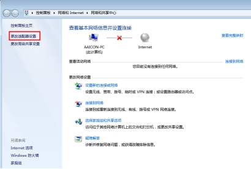
（3）在弹出的网络连接窗口点击需要设置的网卡；
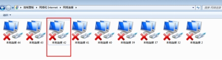
（4）双击图中红框内的“Internet 协议版本4（TCP/IPv4）”
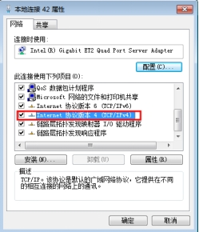
（5）选中图中“使用下面的IP地址（S）”，然后设置红框内的IP地址和子网掩码，设置好之后点击“确定”设置完成；
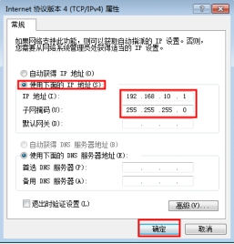
注意
对于VA6.2的版本，VA6.2.153之前的版本使用的LBAS CAPTURE的版本是3.1.190909，VA6.2.153到VA6.3.200.255版本使用的是3.2.0.200922，VA6.3.200.255以后的版本使用3.3.1.210826，如果安装的不是这些版本，需要和测试部或者研发部确认是否使用的定制版，如果不是上述版本请卸载并重新安装上述对应版本；
（1）双击LBAS CAPTURE的安装包进行安装；
（2）刷新到选择语言界面；
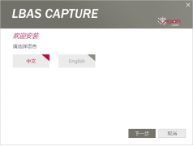
（3）选择下一步，刷新到驱动选择界面（GigE为网口，USB3为U口）；
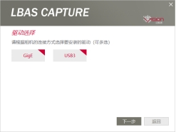
（4）继续点击下一步，刷新到安装路径，默认路径为C盘；
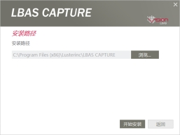
（5）点击开始安装，刷新到安装进度页面；
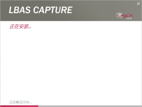
（6）WIN7系统安装进度时会弹出CO，LTD网络服务提示窗口；
（7）勾选始终信任软件，点击安装即可
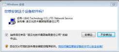
（8）安装完成刷新完成页面
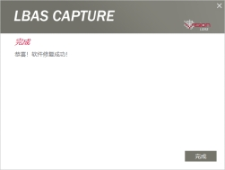
注意
在Win7系统下安装驱动的时候可能会遇到下图弹出要求数字签名的弹窗，这种情况需要注意，驱动安装不成功，而且可能会导致网口找不到，需要先对Win7打 一个补丁，然后重新安装驱动同时需要重点排查过滤驱动是否正确安装；
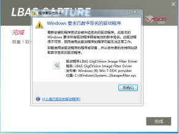
请先将相机连接到工控机上，网线一端连接相机，另一端连接工控机网口，如果工控机没有POE模块，还需要给相机独立供电，连接电源线。要求网线是超五类的高柔线。连接后，确认相机一端的网线是安装到位的，紧固螺钉一定要是锁紧状态，若相机上有指示灯，则指示灯呈蓝色/绿色闪烁状态；工控机端网口上插入的网线卡扣确认是卡紧状态，网口指示灯呈点亮状态。
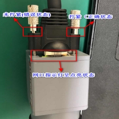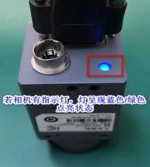
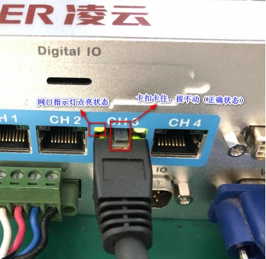
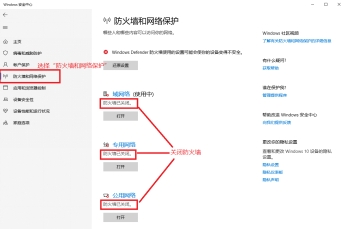
（1）点击任务栏右下角处小地球标志；
（2）在右侧会弹出网络设置点击“网络和Internet设置”；
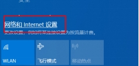
（3）在设置界面，先点击以太网，在点击更改适配器选项；
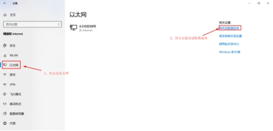
（4）找到相机连接的网卡，双击或者右键属性打开；
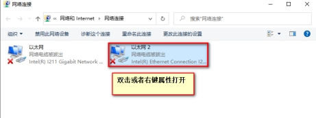
（5）双击红框Internet协议版本4（TCP/IPv4）进入IP设置界面；
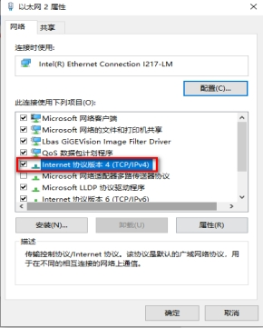
（6）设置静态IP，需要按照规定设置IP地址和子网掩码；
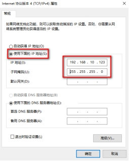
（1）先打开任务栏右下角电脑标志，然后点击弹出的“打开网络和共享中心”；
（2）在弹出的网络和共享中心页面点击左侧“更改适配器设置”；
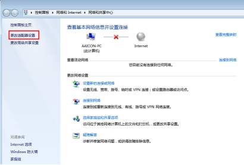
（3）在弹出的网络连接窗口点击需要设置的网卡；
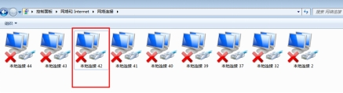
（4）双击图中红框内的“Internet 协议版本4（TCP/IPv4）”
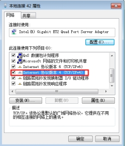
（5）选中图中“使用下面的IP地址（S）”，然后设置红框内的IP地址和子网掩码，设置好之后点击“确定”设置完成；
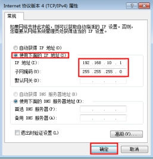
（1）点击配置跳转到属性界面。
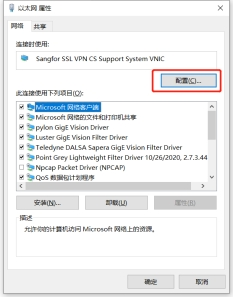
（2）然后点击红框内的高级，将接收缓冲区(Receive Buffers)设置为最大值，一般为2048；巨帧(Jumbo Packet)设置为9k或者最大值；中断裁决率（Interrupt Moderation Rate）设置为极值。
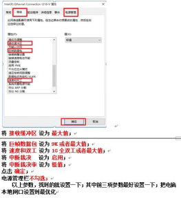
（3）点击电源管理，在里面取消勾选“允许计算机关闭此设备以节约电源（A）”
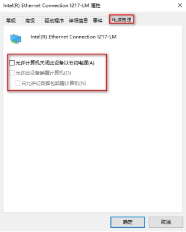
（1）查看是否有LBAS GigeVision Image Filter Driver没有或者出现两个都存在问题需要重新安装驱动；除此之外还有没有其他的Filter Driver，如上图中的Teledyne Dalsa的或者HIK的，如果存在多个，需要卸载其他的Filter Driver。
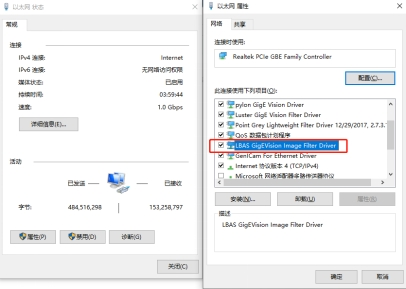
（2）在LBAS CAPTURE安装目录中打开驱动安装工具；
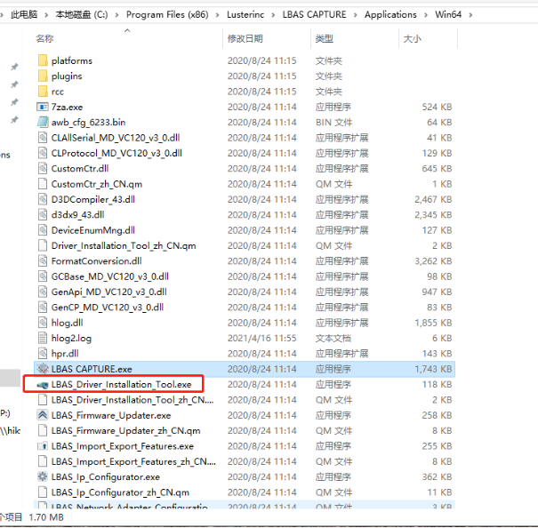
（3）双击打开LBAS_Driver，若显示未安装时，点击安装；
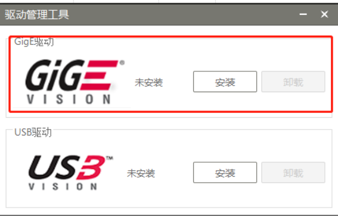
注意
3.2.2.200922版本这个功能有可能不能正确检测驱动是否正确安装；
（4）对于LBAS CAPTURE 3.2的版本，需要在日志中确认一下；
在C:\Windows\Temp\LbasSdkLog\ 路径下查找SDK_00.log和SDK_01.log，如果没有在这个路径没有这两个日志文件，则在VISIONAssembly的路径下查找，如果没有则全局搜索；
如果文件不能带出来则需要验证文件中是否有截图里的信息；
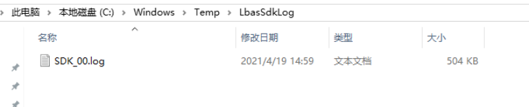
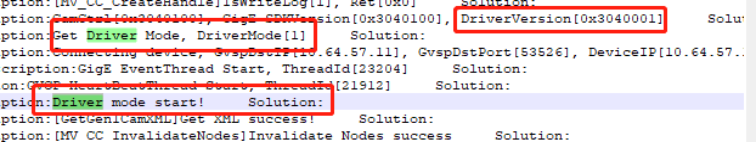
如上图中出现了Driver mode start则是过滤驱动成功安装，如果出现Driver mode failed 或者搜索时出现socket字样时则是过滤驱动安装失败；
注意
如果安装了杀毒软件，需要把LBAS CAPTURE加入到白名单中，以防因为杀毒软件的拦截造成的过滤驱动不能正常使用；
提供小工具：云盘下有LBAS问题排查工具
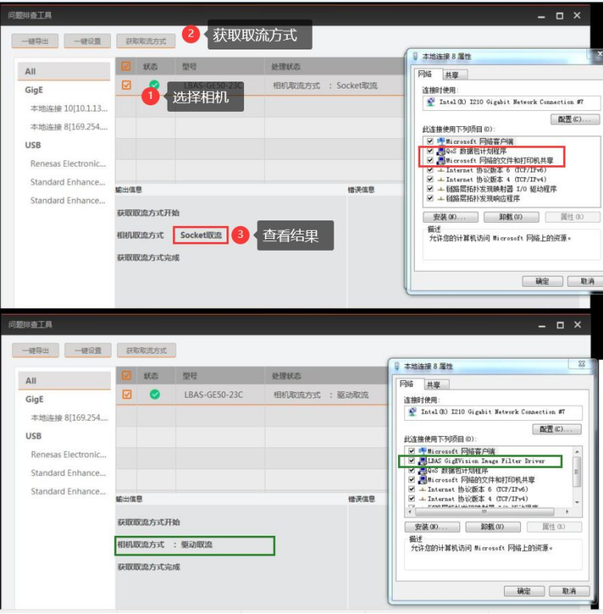
（1）正常状态下网卡处于识别状态；异常情况下，网卡识别不到相机，如图所示：
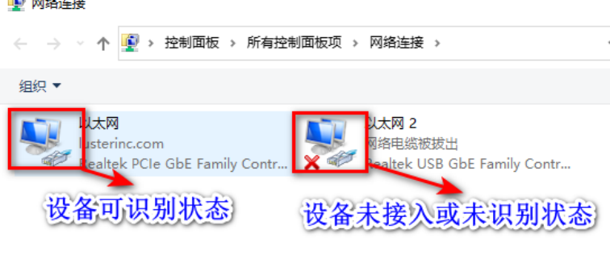
网卡识别不到或者网卡呈灰色禁用状态下，需要查看”我的电脑—-管理—-设备管理器“，网卡驱动是否含有黄色感叹号，若有则需要重新安装网卡驱动；若没有，可以尝试重新禁用再启用该网卡，看是否能恢复到设备可识别状态。进行上述操作后，网卡还不能识别到设备，则需要更换工控机。
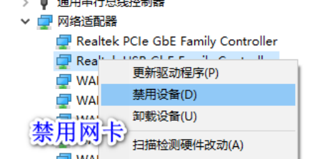
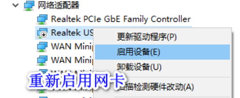
（2）经过实验室测试，Realtek网卡性能不足，容易产生丢包情况，需要更换为Intel网卡（推荐I210、I 350等）。此外，若网卡的驱动版本过于陈旧，也会给相机采集带来不良影响，需要利用驱动精灵等软件进行驱动的更新，建议驱动程序使用2015年之后的版本。网卡类型以及驱动信息，查询方式如图所示，右键网卡—-属性—-配置—-驱动程序。
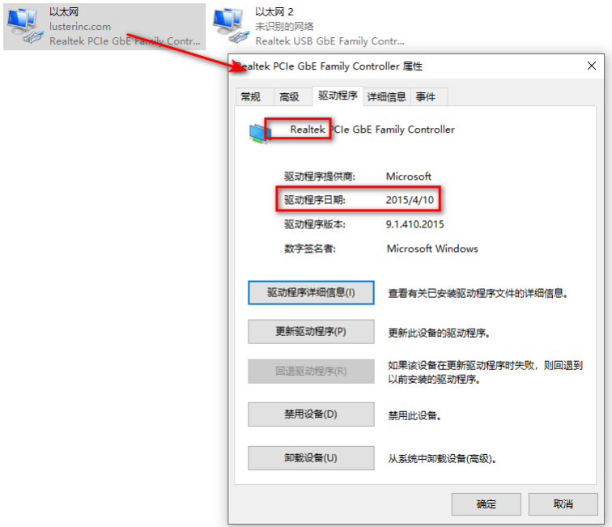
帧率：用来表示每秒采集多少张图片；
曝光：用来增强图像亮度，一定范围内，曝光越大图像整体越亮；曝光过大，会导致帧率降低（建议曝光设置在80ms以下）；
增益：用来增强图像亮度，增益不适合过大，会同比放大信号和噪声；
Gamma：用于图像对比度增强（相机过曝或曝光不足，一般采用默认值）
像素格式：目前软件支持Mono8（黑白），RGB（彩色），Bayer格式（彩色）
采集模式：分为触发模式和非触发模式两种。触发模式中，又分为软触发和硬触发。其中，软触发指相机在接收到相关指令/命令后开始采图，VA软件中采集工具在执行时会发出触发指令；硬触发指相机在接收到高低电平信号后开始采图，该电平信号不由软件控制，一般由PLC给出。非触发模式指连续采集模式，VA软件中在前期项目调试成像时多会用到该模式，正式的生产中用的都是触发模式，如图所示。
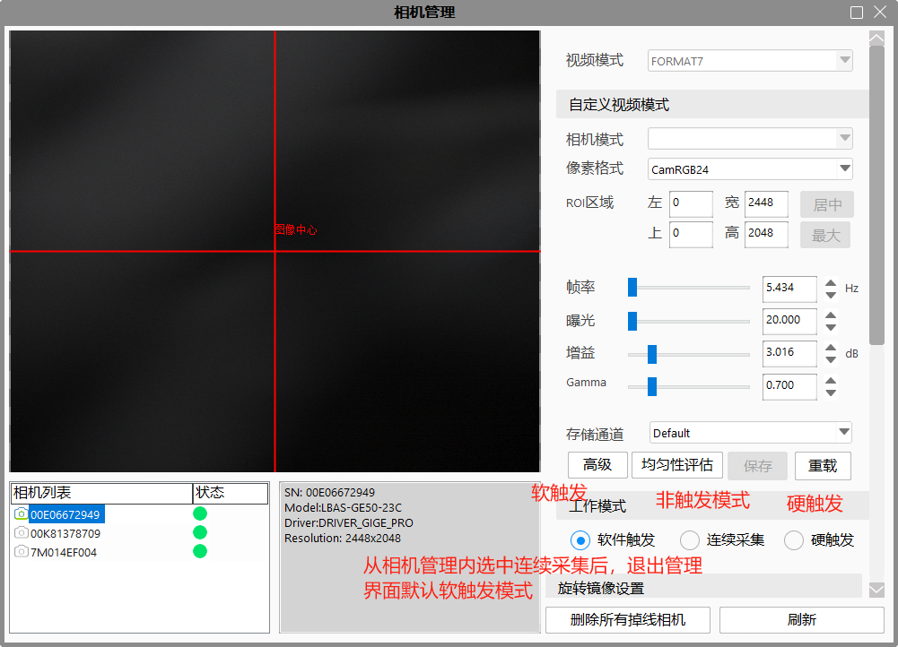
SCPD参数是指帧间包延时。该参数的作用是通过调大该参数，减少单位时间内传输的数据总量，从而降低数据丢包的可能，避免图像出现黑条纹等情况。不同厂商的SCPD参数描述与设置不同。
注意
SCPD设置的过大会影响相机的最大帧率，默认推荐是400，VA中配置是4000.
(1) 若正在使用的VA软件版本是非基线版本（基线版本：V5.5和V6.2），需要在相机SDK中修改。
针对LBAS相机：
S1：选中相机设备，点击连接按钮连接相机，如图所示:
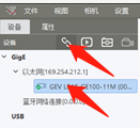
S2：设置下方参数Transport LayerControl中GEV SCPD值，如图所示:
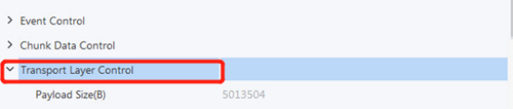
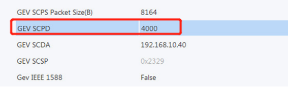
S3：在User Set Control中保存设置，通道选择一致后保存，如图所示：
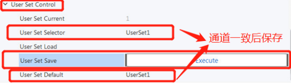
(2)若VA软件版本是V5.5或着V6.2基线版本，SCPD参数已经在软件中默认设置为4000。因为设置该参数，带来的影响是降低帧率，采集时间会有所增加。如果对CT要求严格的现场，可以在软件配置文件中进行修改恢复帧率，修改方法如图所示:
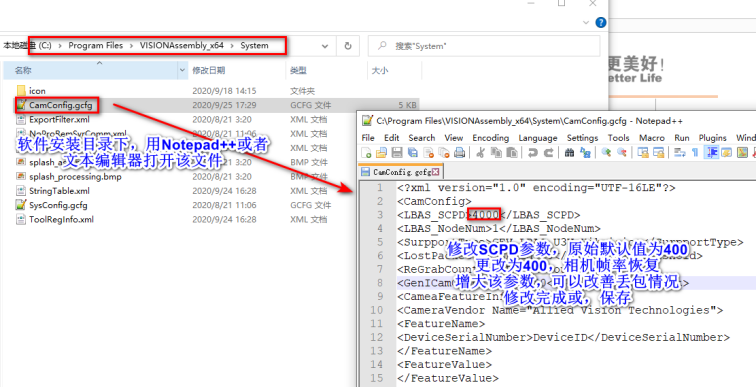
如果是6.3以后的版本，SCPD的设置是在VA软件的相机管理中
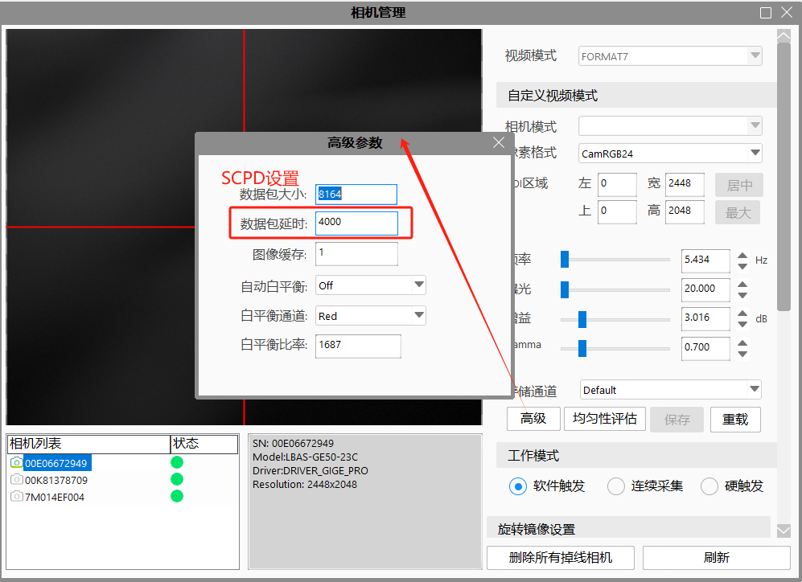
注意
若相机的应用场景不是飞拍项目，可以跳过该步骤设置。
在一些飞拍的应用项目上，会有这样的应用场景：相机在一个流程内会进行多次飞拍，等完成多次拍照后再进行后续的图像处理和结果反馈，这时就需要将相机的硬触发缓存数设置为相机的拍照数，否则会产生串图以及黑图等现象。硬触发缓存的设置如图所示：
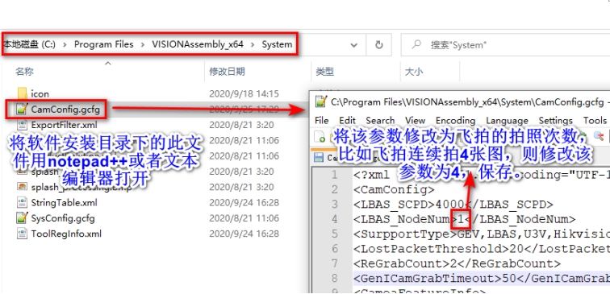
6.3以后的版本可以在VA的相机管理中设置
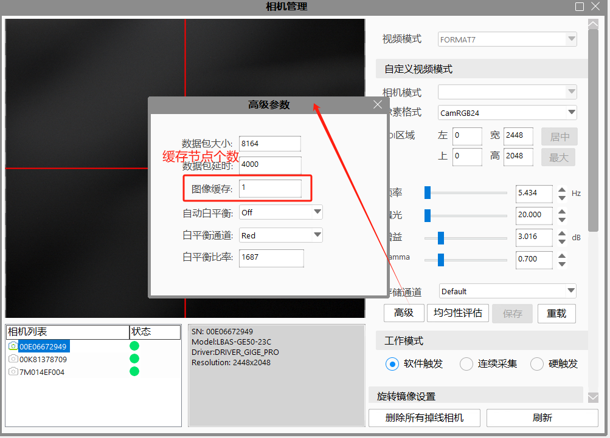
彩色相机支持白平衡功能，可根据不同光源照明条件进行颜色校正。可以通过调整图像中的 R、 G、 B 分量使得白色区域在不同色温下都能始终保持白色。理想情况下，白色区域的 R、 G、 B 分量比例为 1:1:1。白平衡分为手动、一次自动和连续自动 3 种模式，设置方式及原理请见下表。
| 白平衡模式 | 对应参数 | 参数选项 | 工作原理 |
|---|---|---|---|
| 手动 | Analog Control > Balance White Auto | Off | 用 户 可 以 通 过 Balance RatioSelector 和 Balance Ratio 参数手动调节 R/G/B 分量，分量范围为 1 ~4095， 1024 表示系数比例 1.0 |
| 一次自动 | Once | 根据当前场景，运行一段时间自动白平衡后停止 | |
| 连续自动 | Continuous | 根据当前场景，自动进行白平衡调整 |
当相机画面色彩效果与实际相差较大时，可进行白平衡校准。需要在LBAS Capture中进行。 具体操作步骤如下：
准备一张白纸，放在相机拍摄视野范围内， 使白纸充满整个画面。
设置曝光和增益，建议将图像亮度设置在 120 ~ 160 之间。
Balance White Auto 参数默认为 Continuous，进行自动白平衡。
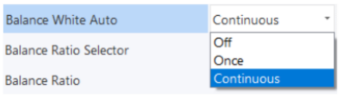
若经过以上操作后，校准后的效果与实际色彩相差仍然较大，可进行手动白平衡校正。
注意
校准完毕后，建议将参数保存到用户参数组， 避免相机断电重启后重新进行校准。
若所处环境的光源、色温发生变化，需要重新进行白平衡校准。
（1）在桌面上找到LBAS软件的标志双击打开
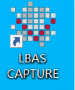
或者在菜单中找到“LBAS”文件夹点击展开找到“LBAS CAPTURE”单击打开；
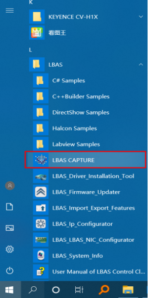
（2）点击GigE左侧展开网卡和相机，点击网卡左侧箭头展开，找到需要设置的相机，如果没看到相机可以点击循环标志的按钮多次刷新直到找到相机，选中需要设置的相机然后点击菜单栏中的“工具”在弹出的菜单中点击“IP设置工具”进入IP配置工具窗口；
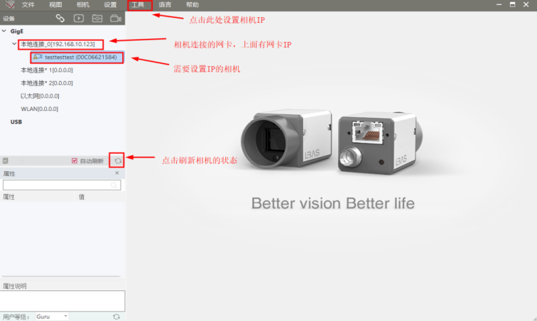
（3）在IP配置工具中，选中“静态IP”，然后配置“IP地址”、“子网掩码”和“默认网关”设置IP地址的时候要注意和网卡处于同一网段，设置完后点击右下角的“保存”，最后点击右上角的叉号关闭改窗口；
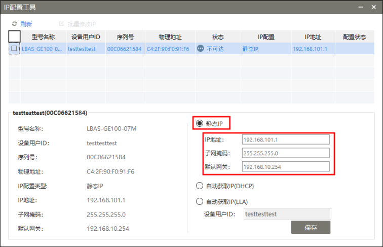
注意
虽然双击相机可以弹出“修改IP地址”窗口来设置IP，但在正规操作中避免此类操作；
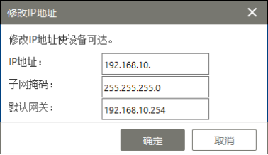
SDK及固件查询与升级
双击桌面LBAS图标，选择”帮助—-关于“，在弹出的对话框中查询到SDK版本信息。
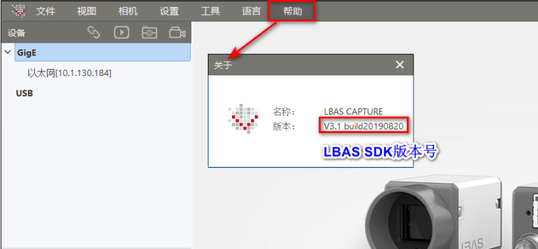
注意
LBAS 驱动名称为LBAS CAPTURE_NEU_3.1_190909.exe，对应的版本为“V3.1 build20190820”
若SDK不是最新版，需要升级到最新版。首先在控制面版中将原始旧版本软件卸载掉，重启电脑后在进行新版软件的安装。（为保证卸载干净，最好重启电脑），如果卸载不掉需要安装（或修复）电脑安装的版本在去重新卸载；
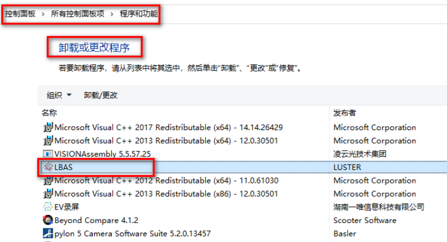
固件查询与升级
双击桌面LBAS图标，点击按钮，确认相机在非连接状态,如下图所示；

选择工具—–固件升级工具，查看固件版本是否为最新，如图所示：
若固件需要升级，下载相应的固件文件，进行升级，升级方式如图所示：
LBAS相机各个型号最新固件信息存放于云文档路径下，如下图所示：
最新的SDK驱动以及固件文件存放于云文档路径底下，如下图所示，可直接下载或者向测试部获取。
注意
升级完固件后需重启一下相机；

（1）C:\Users\计算机用户名\LBAS\LBASLog
（2）VA的安装路径下；
（3）如果设置过日志路径需要在自己设定的目录下查找：
（4）如下截图的路径：
注意
日志的名称可能是SDK_00.log和SDK_01.log
相机不能连接
安装完LBAS CAPTURE后，使用LBAS CAPTURE和VA软件都不能识别到相机，或者相机出现严重丢包现象，需要检测是否安装了最新USB3的驱动；
相机丢包
做完LBAS CAPTURE的基础排查后，如果还是丢包或者出现相机掉线不能重连，需要检查是否是USB线太长或者是使用了USB2，USB3线理论上5m是极限，实际上也就3米左右是稳定的极限，线的质量不一稳定性也不一致，如果有长距离连接的需求可以考虑使用光纤USB3的线；
独立参数使用gamma后采集时间长很多
USB3相机的Gamma设置一次需要150ms，所以使用独立参数的时候不要修改Gamma值。
支持相机型号：LBAS-10G250-40M/C，LBAS-10G650-15M/C，目前只有这两款万兆网相机。
万兆网卡型号：PCIE-10GIGE-X1 （单口）
驱动下载链接：AnyShare://IVS23 3C产品部/3C 产品管理部/采集卡
LBAS CAPTURE版本要求：3.2及以上
驱动安装、硬件连接、参数设置等操作和其他LBAS相机一致，请查看LBAS的使用。
检查连接速度
控制面板\网络和 Internet\网络和共享中心\选择对应的网卡：
选择对应网卡双击会显示如下界面， 判断连接速度是否是 10.0Gbps
注意
如果不是 10GB，可以尝试重新插拔网线， 或者更换 PCIE 卡槽，要求必须是PCIe2.0以上版本，部分老机器可能会存在PCIe 1.0的插槽。
如果提示数字签名问题，针对Win7系统，安装Windows6.1-KB3033929-x64.msu补丁即可；针对是 win10 系统， 则需要禁用签名，目前还未获取 win10 系统对于此 bug 的修复补丁。 禁用步骤：重启电脑—重启过程中， 一直按 shift 键—选择禁用签名。
1、从云盘中下载Windows6.1-KB3033929-x64.msu，然后双击安装；（AnyShare://IVS23 3C产品部/VISIONAssembly发布/04-驱动和工具/相机/LBAS）
2、安装完成之后重启电脑；
3、然后重新安装LBAS CAPTURE等软件；
如果在使用的工控机上有杀毒软件，可能会拦截我们安装的驱动，或者在使用的时候拦截我们的驱动，使相机不能正常工作，现在以360为例对LBAS驱动添加白名单：
1、打开360杀毒；

2、打开360杀毒后，点击右上角“设置”；

3、然后我们就进入360杀毒设置，找到左边的文件白名单，然后点击添加文件；
4、选择想要加入白名单的文件，选择完毕之后点击“打开”，对应下图需要换到我们驱动的文件；
5、之后我们就可以看到此文件被加入白名单的提示，还有选择“内容发生变化后，次白名单是否失效”，设置完毕后点击“确定”；
6、我们就能在白名单中看到刚刚加入的文件，以后360杀毒扫描的时候，就会自动跳过此文件，而不会出现误杀的情况；
相机使用过程中，会遇到各种问题，下文对主要的几种情况从现象描述、问题原因、排查及解决措施等方面进行了总结。
Q:
VA在使用的时候找不到相机，点击刷新按钮也刷新不到相机，如何解决？
A:
VA软件识别不到相机主要分为相机屏蔽和IP的设置问题，下面将分情况详细叙述：
现象描述：
相机在使用过程中由于网络断开或者供电断开使相机重新连接时，软件连接不上该相机，通过该相机的SDK（如上文中LBAS相机使用的LBAS CAPTURE软件）打开查看相机的状态是如下图所示中两种状态：黄色叹号->相机IP不对，红色叉号->相机占用；
解决方法：
在设置相机的IP时有时会遇到使用的相机和SDK软件不是匹配的，需要安装对应的SDK来设置；
查看相机连接的网卡是否是使用的动态IP，如果是动态IP请参考上文中网卡IP设置来设置网卡IP为静态IP，然后使用相机SDK查看是不是相机IP变为169网段，或者是变为静态IP，如果是请按照上文中的相机IP设置来设置相机IP为静态IP；
如果相机状态出现黄色叹号的情况，使用上文中相机IP设置，来设置相机IP；
现象描述：
在“LBAS CAPTURE_NEU_3.1_190909.exe”的相机IP设置中，点击“工具”->“IP配置工具”弹出缺少库；
解决方法：
卸载“LBASCAPTURE_1.0.1905.CL.exe”然后重新安装“LBAS CAPTURE_NEU_3.1_190909.exe”
卸载软件方法：
现象描述
如果相机SDK中相机的状态如图左侧所示正常，但是VA软件识别不到相机；
如果相机SDK中相机状态如图右侧被占用，VA软件启动时连接失败，点击相机管理中的刷新后相机状态是离线；
解决方法：
如果是可以正常连接的状态，查看配置文件中查看该相机是否被禁用掉；
找到VA软件图标右键然后在弹出的右键菜单中点击“打开文件所 在的位置（I）”，打开的文件夹如上图所示，然后双击打开“System”文件夹找到所示的“CamConfig.gcfg”文件，如下图所示；
用记事本打开“CamConfig.gcfg”文件如图所示，在该文件中查看是否该相机已经被屏蔽掉，如果被屏蔽删除“CameraSN”对应的一行保存改配置文件然后重启VA；
查看该相机的模块是否被删除，如LBAS相机对应的GvCamLBase12u.dll
找到VA软件图标右键然后在弹出的右键菜单中点击“打开文件所 在的位置（I）”，打开的文件夹如图所示，双击打开红框中文件夹“Plugins”；
查找相机对应的模块如图所示，看使用的相机对应的模块是否之前被删除过（相机问题规避策略会使用）；
查看软件要求的SDK版本和已经安装的版本是否对应；
如果是现象（2）中相机被占用的情况，相机断电重启，然后连接相机即可。
若打开VA软件数据存储目录底下的TraceLog*.txt（时间最新的文件，在LusterCache文件夹下如TraceLog1.txt或TraceLog2.txt），发现GvCamLBase12u.dll加载失败，如图所示，需安装“安装LBAS CAPTURE_NEU_3.1_190909，SDK识别相机，VA不识别相机.zip”补丁（该补丁在文档云硬件共享资料文件夹中）；
现象描述：
如图中网卡或者相机不存在；
相机的指示灯状态异常，正常状态是相机的指示灯为蓝色/绿色闪烁，网络连接指示灯呈点亮状态，此时为红色闪烁网络指示灯不亮等情况，如图所示；
解决方案：
检查网络连接是否正常，驱动安装不当可能会导致网口失效，找不到——安装驱动签名的补丁；
查看网线，替换网线测试等排查，如果异常更换网线；
检查相机是否正常，把相机换到其他工控机测试，检查相机是否异常，如果异常更换相机；
检测网卡POE供电（电源供电），检查网卡是否异常，替换网卡查看是否可以恢复，如果网卡问题更换网卡；
把相机接到别的工控机以及更换在其他正常工作的相机来测试工控机等，查看是否正常，排查工控机异常则更换工控机；
注意
如果是U3相机，做了上述排查还不能解决，需要查看2.1.6 USB3相机使用注意事项；
Q:
在打开VA软件后，可以刷新出相机，或者点击刷新按钮可以刷新出相机，但是不能连接使用？
A:
这种情况一般是新相机没有做兼容、相机被占用或者连接线有问题，下面分情况做详细阐述：
硬件列表中没有
新相机接入，需要把相机、采集卡、连接线、电源线等全套发回研发部进行兼容后使用；
相机占用
查看是否在LBAS CAPTURE中、其他打开的VA中或者没有退出的进程中占用了相机，如果是被占用关闭先用相机的软件或进行后，在相机管理中点击刷新（重新打开VA软件）会连接上相机。
软件强制退出引起相机资源占用
重启相机，再次连接即可；
连接线问题
检查网线是否存在问题，USB3线是否过长等；
Q：
VA软件使用相机采集到的图像发生了异常，主要表现为采集到的图像中出现了黑色条纹、错位、以及图像由当前图和前一张图拼凑而成等情况，如何解决？

A:
相机数据在传输过程中因为丢包造成黑条、花屏等问题
排查及解决措施
确认网卡型号以及网口驱动满足需求，具体操作参照1.2章节。
确认网卡参数如1.2章节描述完成相应设置。重点关注巨帧、收发缓存、中断裁决率等参数。
若相机不是LBAS相机，可跳过该步骤。若是LBAS相机，确认相机SDK软件（LBAS CAPTURE）是要求的版本号（注：V5.5和V6.2基线版SDK已同步到最新，但部分现场旧版软件可能存在旧版驱动的情况），确认相机固件是最新的固件。具体设置可参照1.2章节
经过前两步验证后，若相机还有丢包情况产生，需要对SCPD(帧间包延时)参数进行更改（注：更改SCPD参数会降低帧率，导致采集时间加大，具体需要实际现场）。具体设置参照1.3章节
软件中加入丢包重采功能。（V5.5和V6.2基线版已添加该功能，其他版本软件可联系测试部，按需添加）
若以上步骤后，相机还会有较严重的连续丢包，会对后续的图像处理产生影响，可以更换相机排除个体原因。
说明
相机丢包问题，因为相关的硬件、软件、系统等影响因素太多，不能保证相机根本上不丢包，目前只能改善丢包的严重程度，消除对视觉图像处理的影响。
Q:
VA软件在使用相机拍摄图像的时候，发现图像中物体出现扭曲、错位、模糊等情况，什么原因造成的，如何解决？
A:
这种情况一般多出现在Rolling相机中（LBAS-GE60-17，LBAS-GE100-11M，LBAS-GE120-10，LBAS-GE200-5M等），拍摄过程中相机和被拍摄的物体之间存在运动，对于这种问题需要在拍摄前添加延迟，或者通过检查软件和机构等的工作流程消除掉这种拍摄过程中出现的相对运动的情况，对于图像扭曲下面描述了扭曲现象和可能对应的相机类型。
Q:
在使用相机硬出发做飞拍的时候，采集到的图像模糊不清楚是什么原因造成的，如何处理？
A:
使用飞拍必须使用GLobal相机，在相机拍摄的过程中相机和被拍摄物体之间有相对运动，当曝光时间过久时，会导致被拍照物同时在多个像素上成像，导致图像出现了重影、拖影等，针对飞拍最重要是确定曝光时间。
确定曝光时间遵循如下公式：
曝光时间≤光学分辨率（物理分辨率/像素当量）/运动速度
注意
飞拍需要高亮频闪光源，大光圈镜头，大像元相机。
Q:
在相机使用硬触发采集图像的时候，是否会出现错误的触发信号引起相机拍摄错误物体，这样的情况如何解决？
A:
相机在硬触发模式下接收到触发信号后会拍摄图片存到SDK中，一般3V左右的压差信号就会导致相机触发，当取图的时候实际是直接获取的缓存中的图片，所以在流程中在不必要的情况下机构给了硬触发信号，导致缓存中多了不需要的图片，或者是图像序列号对不上，这时需要如下操作：
控制好机构的信号给出（确定触发信号的时序正确，电压信号是否有毛刺（常见继电器或者开关电源做触发会存在这种情况）；
在不需要接收硬触发信号的时候通过相机模式转换工具把相机的触发模式设置为软触发，在需要接收触发信号的时候在设置回硬触发模式；
如果现场信号没法确认干净，建议打开相机的抗干扰模式，可以过滤一部分干扰信号。
Q:
使用相机获取图像的时候出现拍摄的图像亮度不一致、采集的图像亮度和连续采集时的亮度不一致的情况，如何解决？
A：
确定相机和光源的同步性：针对频闪光源，务必确认相机采集时光源已经开启；
通过独立参数频繁设置相机的曝光、增益、Gamma等会存在一定几率出现设置未生效，这时尽量减少独立曝光的使用，如果一个相机拍照两次可以一个相机使用默认参数一个相机使用独立参数；
有的相机是因为固件原因引起，需要升级到最新版本的固件；
Rolling相机使用GlobalReset模式，采集的图片亮度和非触发模式下连续采集到的图片亮度不一致，这是相机特性决定；
Q:
使用彩色模式后达不到帧率
A:
我们软件中支持的彩色格式有RGB8Packet和Bayer8格式，当使用RGB8Packet的时候采集时间会比Bayer格式长很多，一般推荐使用Bayer8格式；
Q:
彩色相机颜色还原度不好
A:
白平衡没做好，参照1.3彩色相机白平衡；
固件升级，部分彩色相机同一个版本有两个版本的固件，一个是边缘清晰，一个是白平衡还原度好的；
像素格式（如果需要颜色艳丽建议使用RGB8格式，但此格式会降低相机最大帧率）
Q:
相机设置好像素格式后，加载工程像素格式变为其他像素格式且无法修改：
A:
除了6.2基线，其他版本中还没有开放LBAS相机像素格式的设置，我们的工程会保存相机格式，所以在相机上设置之后会被工程修改且无法改回，现场可以通过修改工程中参数的方法来修改相机的像素格式，使用notepad++（注：使用文本格式打开可能使工程不能使用）打开工程，按照下图中修改为彩色格式即可；
Bayer格式分为4种，需要在相机驱动上查看支持的像素格式，然后按照像素格式修改，下图是BayerRG8的修改；
Bayer格式与像素设置对照表：
| Bayer格式 | 工程中ePixelFormat的值 |
|---|---|
| BayerRG8 | 3 |
| BayerGR8 | 4 |
| BayerGB8 | 5 |
| BayerBG8 | 6 |
Q：
在使用相机采集图像的时候，出现采集时间会偶尔出现几秒甚至十几秒的情况，如何解决？
A:
对于采集时间长的原因有很多，一般是写日志的时候达到磁盘的IO瓶颈引起卡住，还有一些杀毒软件、防火墙、网卡带宽等原因，下面有详细的解决措施：
问题排查及解决措施：
关闭相机日志和图像采集工具日志（6.3版本是需要在软件的系统中设置，无需重启软件）
关闭磁盘休眠
关闭防火墙
检查相机设置
SCPD：
SCPS：
6.3以后及6.5版本需要在VA的相机管理中检查
检查网卡设置以及带宽
网卡设置：按照1.2章节中的方法查看是否正确设置；如果里面还有其他采集驱动的过滤驱动，且我们没有用到，需要把其他采集驱动卸载。
带宽：如果工控机连接多个相机，且连接相机的千兆网卡是1拖2或者1拖4，需要查看网卡的类型，以及插槽的类型，是否是PCIE X4及以上的，如果不是有可能因为带宽不够引起相机丢包而导致采集时间长。
Q:
使用VA软件的相机管理查看相机的帧率达不到标定的最大帧率，如何解决？
A:
相机的帧率达不到标定的最大值一般是有曝光设置过大，SCPD设置过大还有就是硬件方面的比如网卡配置，网卡带宽等原因，针对不同情况的设置如下：
相机参数设置
打开“VA”软件之后，先点击“设置”在点击“相机”进入相机管理。
进入相机管理中，点击左上相机列表中的相机查看，在右侧相机参数的红框内看帧率是否设置过低，过低的情况下需要把帧率调节到最大；曝光设置会影响帧率，如果曝光设置高，帧率可设置的最大值会降低。
如果在“图像采集工具”中使用了独立参数，在此处设置的曝光值过大（超过100ms）也会影响采集帧率；
若相机中SCPD设置的过大，也会降低帧率，造成采集时间过长。关于SCPD参数的修改具体参照1.3章节。
如果是彩色相机需要看相机的像素格式是否为bayer格式，见2.7 彩色相机使用问题
如果是USB3相机，需要检测相机的USB3线长度和是否是USB2，见1.6 USB3相机使用注意事项
网卡参数设置：
按照1.2 网卡设置中的方法查看“巨帧”、“收发包缓存”等设置是否正确设置；
如果现场使用两个1拖4的网卡来使用6个相机，则每个网卡连接3个相机（检查网卡的带宽是否满足连接相机个数的要求）；
相机固件：
LBAS相机的Rolling相机固件未更新，则需要更新该系列相机最新的固件。具体可参照上文1.2章节部分。
Q:
相机在使用过程中出现采集失败，对应采集工具状态的颜色为红色，现象描述如下：
现象描述：
在正常生产过程中，出现了采集工具执行失败，工具报红的情况。
具体的情况可能有：
采集失败的工具，只是偶尔采集失败一次，重新运行选中能够执行成功；
采集工具高频次(一天5次以上)的出现执行失败的情况，且采集日志中出现“未知错误”提示：
采集工具反复执行失败，相机指示灯呈现红色：
A:
有可能相机掉线、相机接触不良、GenICam库问题等
排查及解决措施：
出现采集失败的问题，请先确认相机一端的网线和网口端的网线是安装到位的，具体操作参照2.1_相机及网口连接设置)
确认相机驱动SDK以及相机固件已经更新到最新，具体参照附录4.1
在生产工程中添加采集失败防呆措施，规避偶尔（几天到几周一次）的采集失败现象。
注意
采集防呆措施目前只在固定版本进行了采集工具内部封装处理，在测试优化完成后添加进V5.5和V6.2两个基线版本。其他旧版本，暂时还需要在工程端进行规避），防呆逻辑如图所示：
若相机丢包频次很高（一天5次以上）且采集日志中能看到“其他错误”提示，需要增加内存条，扩大系统内存。（系统中因为内存交换引起页面错误，导致相机底层发生错误）
检查图像采集工具的超时是否设置过小，建议采集超时设置为-1
检测曝光是否设置的比较大，超过了图像采集的时间，一般曝光设置到80ms以下；
Q：
如何屏蔽其他相机？
A：
需要屏蔽的相机和扫码枪和我们使用相机使用不同的协议时：
通过删除需要屏蔽相机或者扫码枪的库解决，如下图是所有相机对应的库，如果我们只使用了LBAS相机，我们就可以只保留GVCamLBase12u.dll把其他的都删除即可；

通过在配置文件中添加屏蔽SN解决，如下图：用notepad++（或者记事本）打开System文件夹下的“CamConfig.gcfg”文件如图所示，添加CameraSN项，属性写需要屏蔽的SN，每添加一个需要屏蔽的SN添加一条CameraSN；
需要屏蔽的相机和扫码枪和我们使用相机使用相同的协议时：
只能通过在配置文件中添加需要屏蔽的相机或者扫码枪的SN解决，操作方法如上个问题中的描述；
Q:
使用飞拍的时候，在拍摄多个穴位时出现丢图、串图现象，如何解决？
A:
缓存节点设置
独立参数影响的采集时间长，因为使用独立参数后，相机的采集时间会增加很多，采集时间长了会导致在规定时间内完不成飞拍操作，所有在飞拍的场景下尽量不要使用独立参数；
Q:
安装后截图、采集时出现丢包、上一帧及耗时过长等现象，是什么原因？
A:
检查过滤驱动，并参考2.3和2.9章节。
Q:
如果按照上面的描述还不能解决问题怎么办？
A:
当使用该文档不能解决相机的使用问题时，需收集相机和系统相关信息反馈给研发部：
相机的基本信息：
SDK日志
在C:\Windows\Temp\LbasSdkLog\ 路径下查找SDK_00.log和SDK_01.log，如果没有在这个路径没有这两个日志文件，则在VISIONAssembly的路径下查找，如果没有则全局搜索；
如果文件不能带出来则需要验证文件中是否有截图里的信息；
导出在C:\Users\“当前用户名”\LBAS 路径下的日志；
下面的截图中有没有勾选LBAS GigEVision Image Filter Driver，最好有完整截图可以看已经安装了几个驱动或把下图截图里的信息记录下来。